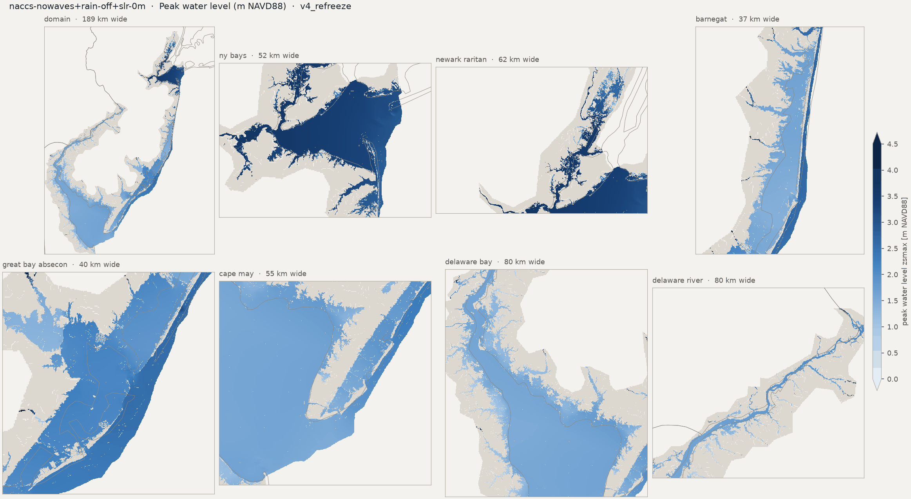
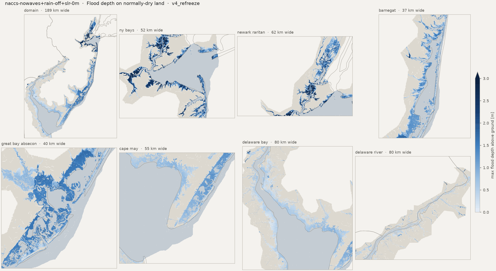
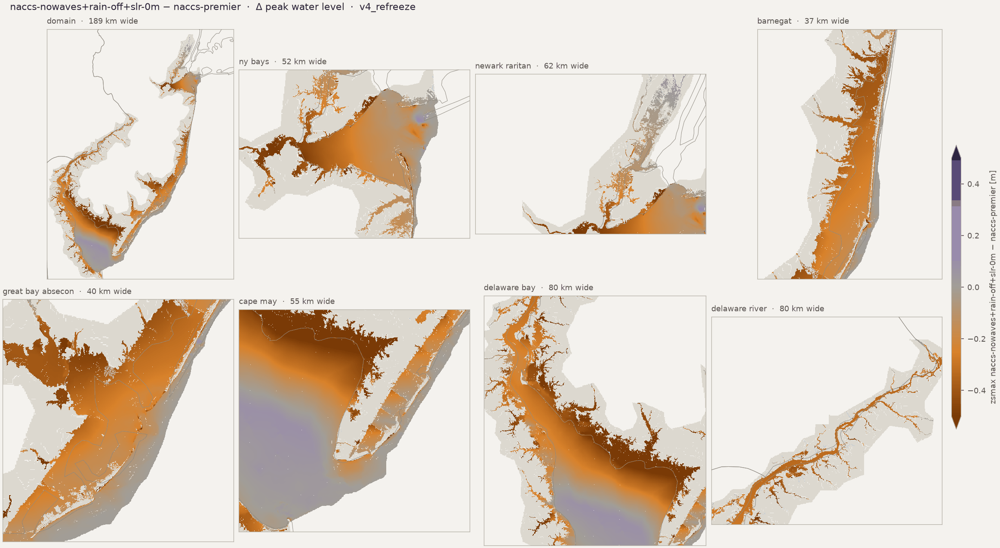
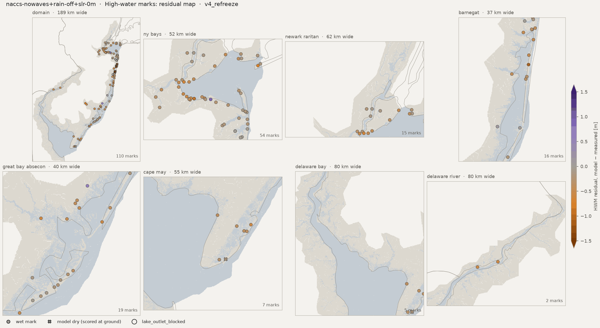
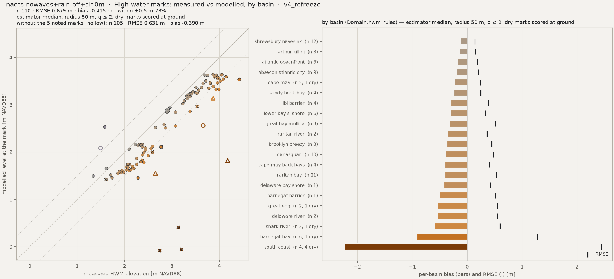
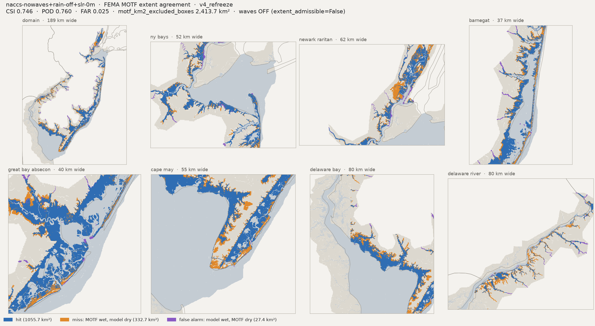
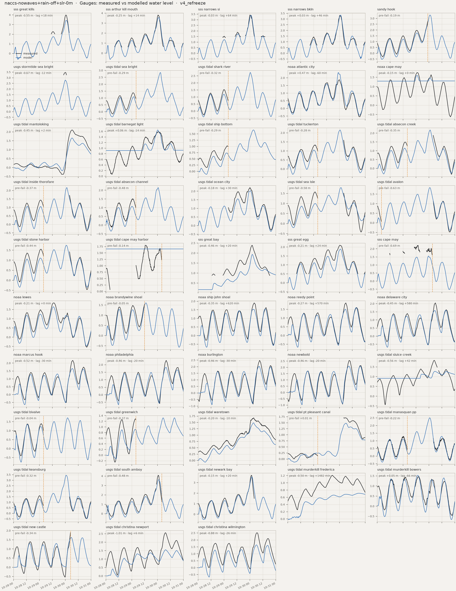
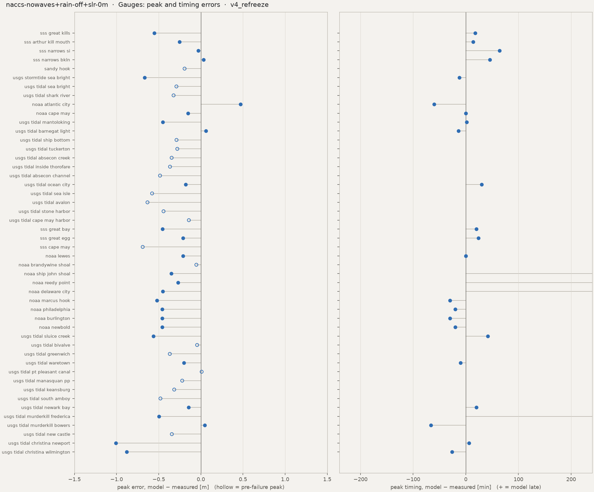

Run card, flags and the standard figure set. HWM numbers: estimator median, radius 50 m. Compare with naccs-premier
Preliminary research diagnostics — not peer-reviewed results.
HWM: estimator median, radius 50 m, q ≤ 2, dry marks scored at ground (the _scored keys). CSI / POD / FAR on sheet-valid land; km² excl. = motf_km2_excluded_boxes.








| peak_zb_sss_great_kills_m | -1.5018250942230225 |
| peak_obs_sss_great_kills_m | 3.990640566666667 |
| peak_obs_time_sss_great_kills | 2012-10-30T00:42 |
| peak_mod_full_sss_great_kills_m | 3.438349962234497 |
| peak_mod_full_time_sss_great_kills | 2012-10-30T01:00 |
| peak_err_sss_great_kills_m | -0.5522906044321698 |
| peak_lag_sss_great_kills_min | 18.0 |
| peak_zb_sss_arthur_kill_mouth_m | -1.062054991722107 |
| peak_obs_sss_arthur_kill_mouth_m | 3.8134290000000006 |
| peak_obs_time_sss_arthur_kill_mouth | 2012-10-30T00:36 |
| peak_mod_full_sss_arthur_kill_mouth_m | 3.5588202476501465 |
| peak_mod_full_time_sss_arthur_kill_mouth | 2012-10-30T00:50 |
| peak_err_sss_arthur_kill_mouth_m | -0.2546087523498541 |
| peak_lag_sss_arthur_kill_mouth_min | 14.0 |
| peak_zb_sss_narrows_si_m | -2.052652597427368 |
| peak_obs_sss_narrows_si_m | 3.4239073 |
| peak_obs_time_sss_narrows_si | 2012-10-30T00:06 |
| peak_mod_full_sss_narrows_si_m | 3.392019510269165 |
| peak_mod_full_time_sss_narrows_si | 2012-10-30T01:10 |
| peak_err_sss_narrows_si_m | -0.0318877897308351 |
| peak_lag_sss_narrows_si_min | 64.0 |
| peak_zb_sss_narrows_bkln_m | -3.9864342212677 |
| peak_obs_sss_narrows_bkln_m | 3.315567833333333 |
| peak_obs_time_sss_narrows_bkln | 2012-10-30T00:24 |
| peak_mod_full_sss_narrows_bkln_m | 3.347684860229492 |
| peak_mod_full_time_sss_narrows_bkln | 2012-10-30T01:10 |
| peak_err_sss_narrows_bkln_m | 0.032117026896159 |
| peak_lag_sss_narrows_bkln_min | 46.0 |
| peak_zb_sandy_hook_m | -4.570703029632568 |
| peak_obs_sandy_hook_m | 2.808 |
| peak_obs_time_sandy_hook | 2012-10-29T23:00 |
| peak_mod_full_sandy_hook_m | 3.28672456741333 |
| peak_mod_full_time_sandy_hook | 2012-10-30T01:10 |
| peak_mod_prefail_sandy_hook_m | 2.61509370803833 |
| peak_err_prefail_sandy_hook_m | -0.1929062919616697 |
| peak_record_ends_sandy_hook | 2012-10-29 23:00 |
| peak_zb_usgs_stormtide_sea_bright_m | -2.3048408031463623 |
| peak_obs_usgs_stormtide_sea_bright_m | 3.4651196864959743 |
| peak_obs_time_usgs_stormtide_sea_bright | 2012-10-30T00:12 |
| peak_mod_full_usgs_stormtide_sea_bright_m | 2.7975716590881348 |
| peak_mod_full_time_usgs_stormtide_sea_bright | 2012-10-30T00:00 |
| peak_err_usgs_stormtide_sea_bright_m | -0.6675480274078396 |
| peak_lag_usgs_stormtide_sea_bright_min | -12.0 |
| peak_zb_usgs_tidal_sea_bright_m | -4.364447116851807 |
| peak_obs_usgs_tidal_sea_bright_m | 1.383792 |
| peak_obs_time_usgs_tidal_sea_bright | 2012-10-29T01:12 |
| peak_mod_full_usgs_tidal_sea_bright_m | 2.8468682765960693 |
| peak_mod_full_time_usgs_tidal_sea_bright | 2012-10-30T02:40 |
| peak_mod_prefail_usgs_tidal_sea_bright_m | 1.0940004587173462 |
| peak_err_prefail_usgs_tidal_sea_bright_m | -0.2897915412826539 |
| peak_record_ends_usgs_tidal_sea_bright | 2012-10-29 04:00 |
| peak_zb_usgs_tidal_shark_river_m | -4.12901782989502 |
| peak_obs_usgs_tidal_shark_river_m | 1.527048 |
| peak_obs_time_usgs_tidal_shark_river | 2012-10-29T00:00 |
| peak_mod_full_usgs_tidal_shark_river_m | 2.741246223449707 |
| peak_mod_full_time_usgs_tidal_shark_river | 2012-10-30T00:30 |
| peak_mod_prefail_usgs_tidal_shark_river_m | 1.206593036651611 |
| peak_err_prefail_usgs_tidal_shark_river_m | -0.3235029633483886 |
| peak_record_ends_usgs_tidal_shark_river | 2012-10-29 04:00 |
| peak_zb_noaa_atlantic_city_m | -7.123184680938721 |
| peak_obs_noaa_atlantic_city_m | 1.877 |
| peak_obs_time_noaa_atlantic_city | 2012-10-30T00:00 |
| peak_mod_full_noaa_atlantic_city_m | 2.347956895828247 |
| peak_mod_full_time_noaa_atlantic_city | 2012-10-29T23:00 |
| peak_err_noaa_atlantic_city_m | 0.470956895828247 |
| peak_lag_noaa_atlantic_city_min | -60.0 |
| peak_zb_noaa_cape_may_m | 1.2928768396377563 |
| peak_obs_noaa_cape_may_m | 1.755 |
| peak_obs_time_noaa_cape_may | 2012-10-29T13:00 |
| peak_mod_full_noaa_cape_may_m | 1.6040453910827637 |
| peak_mod_full_time_noaa_cape_may | 2012-10-29T13:00 |
| peak_err_noaa_cape_may_m | -0.1509546089172362 |
| peak_lag_noaa_cape_may_min | 0.0 |
| peak_zb_usgs_tidal_mantoloking_m | -2.4557981491088867 |
| peak_obs_usgs_tidal_mantoloking_m | 2.1061680000000003 |
| peak_obs_time_usgs_tidal_mantoloking | 2012-10-30T06:18 |
| peak_mod_full_usgs_tidal_mantoloking_m | 1.655644774436951 |
| peak_mod_full_time_usgs_tidal_mantoloking | 2012-10-30T06:20 |
| peak_err_usgs_tidal_mantoloking_m | -0.4505232255630496 |
| peak_lag_usgs_tidal_mantoloking_min | 2.0 |
| peak_zb_usgs_tidal_barnegat_light_m | 0.915690541267395 |
| peak_obs_usgs_tidal_barnegat_light_m | 1.588008 |
| peak_obs_time_usgs_tidal_barnegat_light | 2012-10-30T00:24 |
| peak_mod_full_usgs_tidal_barnegat_light_m | 1.6475886106491089 |
| peak_mod_full_time_usgs_tidal_barnegat_light | 2012-10-30T00:10 |
| peak_err_usgs_tidal_barnegat_light_m | 0.0595806106491088 |
| peak_lag_usgs_tidal_barnegat_light_min | -14.0 |
| peak_zb_usgs_tidal_ship_bottom_m | -4.847646713256836 |
| peak_obs_usgs_tidal_ship_bottom_m | 1.024128 |
| peak_obs_time_usgs_tidal_ship_bottom | 2012-10-29T02:54 |
| peak_mod_full_usgs_tidal_ship_bottom_m | 1.6582823991775513 |
| peak_mod_full_time_usgs_tidal_ship_bottom | 2012-10-30T03:20 |
| peak_mod_prefail_usgs_tidal_ship_bottom_m | 0.7355325818061829 |
| peak_err_prefail_usgs_tidal_ship_bottom_m | -0.288595418193817 |
| peak_record_ends_usgs_tidal_ship_bottom | 2012-10-29 03:54 |
| peak_zb_usgs_tidal_tuckerton_m | -2.1096279621124268 |
| peak_obs_usgs_tidal_tuckerton_m | 1.591056 |
| peak_obs_time_usgs_tidal_tuckerton | 2012-10-30T04:00 |
| peak_mod_full_usgs_tidal_tuckerton_m | 2.157888174057007 |
| peak_mod_full_time_usgs_tidal_tuckerton | 2012-10-30T00:40 |
| peak_mod_prefail_usgs_tidal_tuckerton_m | 1.0465991497039795 |
| peak_err_prefail_usgs_tidal_tuckerton_m | -0.2792808502960204 |
| peak_record_ends_usgs_tidal_tuckerton | 2012-10-29 03:54 |
| peak_zb_usgs_tidal_absecon_creek_m | -1.0937918424606323 |
| peak_obs_usgs_tidal_absecon_creek_m | 1.87452 |
| peak_obs_time_usgs_tidal_absecon_creek | 2012-10-30T04:00 |
| peak_mod_full_usgs_tidal_absecon_creek_m | 2.180592536926269 |
| peak_mod_full_time_usgs_tidal_absecon_creek | 2012-10-30T01:10 |
| peak_mod_prefail_usgs_tidal_absecon_creek_m | 1.1471469402313232 |
| peak_err_prefail_usgs_tidal_absecon_creek_m | -0.3463730597686769 |
| peak_record_ends_usgs_tidal_absecon_creek | 2012-10-29 03:54 |
| peak_zb_usgs_tidal_inside_thorofare_m | -4.974030494689941 |
| peak_obs_usgs_tidal_inside_thorofare_m | 1.712976 |
| peak_obs_time_usgs_tidal_inside_thorofare | 2012-10-30T04:00 |
| peak_mod_full_usgs_tidal_inside_thorofare_m | 2.1679911613464355 |
| peak_mod_full_time_usgs_tidal_inside_thorofare | 2012-10-30T01:30 |
| peak_mod_prefail_usgs_tidal_inside_thorofare_m | 1.0698167085647583 |
| peak_err_prefail_usgs_tidal_inside_thorofare_m | -0.3657912914352417 |
| peak_record_ends_usgs_tidal_inside_thorofare | 2012-10-29 03:54 |
| peak_zb_usgs_tidal_absecon_channel_m | -3.296544551849365 |
| peak_obs_usgs_tidal_absecon_channel_m | 1.5575280000000002 |
| peak_obs_time_usgs_tidal_absecon_channel | 2012-10-29T01:06 |
| peak_mod_full_usgs_tidal_absecon_channel_m | 2.1493310928344727 |
| peak_mod_full_time_usgs_tidal_absecon_channel | 2012-10-30T00:40 |
| peak_mod_prefail_usgs_tidal_absecon_channel_m | 1.0734105110168457 |
| peak_err_prefail_usgs_tidal_absecon_channel_m | -0.4841174889831545 |
| peak_record_ends_usgs_tidal_absecon_channel | 2012-10-29 03:54 |
| peak_zb_usgs_tidal_ocean_city_m | -7.289493083953857 |
| peak_obs_usgs_tidal_ocean_city_m | 2.2098 |
| peak_obs_time_usgs_tidal_ocean_city | 2012-10-30T00:00 |
| peak_mod_full_usgs_tidal_ocean_city_m | 2.0283849239349365 |
| peak_mod_full_time_usgs_tidal_ocean_city | 2012-10-30T00:30 |
| peak_err_usgs_tidal_ocean_city_m | -0.1814150760650634 |
| peak_lag_usgs_tidal_ocean_city_min | 30.0 |
| peak_zb_usgs_tidal_sea_isle_m | -1.7741228342056274 |
| peak_obs_usgs_tidal_sea_isle_m | 1.575816 |
| peak_obs_time_usgs_tidal_sea_isle | 2012-10-29T01:18 |
| peak_mod_full_usgs_tidal_sea_isle_m | 1.7863738536834717 |
| peak_mod_full_time_usgs_tidal_sea_isle | 2012-10-30T01:30 |
| peak_mod_prefail_usgs_tidal_sea_isle_m | 0.9973397254943848 |
| peak_err_prefail_usgs_tidal_sea_isle_m | -0.5784762745056153 |
| peak_record_ends_usgs_tidal_sea_isle | 2012-10-29 03:54 |
| peak_zb_usgs_tidal_avalon_m | -6.805160999298096 |
| peak_obs_usgs_tidal_avalon_m | 1.139952 |
| peak_obs_time_usgs_tidal_avalon | 2012-10-30T04:00 |
| peak_mod_full_usgs_tidal_avalon_m | 1.8379456996917725 |
| peak_mod_full_time_usgs_tidal_avalon | 2012-10-30T00:50 |
| peak_mod_prefail_usgs_tidal_avalon_m | 0.2689558863639831 |
| peak_err_prefail_usgs_tidal_avalon_m | -0.6332521136360169 |
| peak_record_ends_usgs_tidal_avalon | 2012-10-28 03:54 |
| peak_zb_usgs_tidal_stone_harbor_m | -7.561686038970947 |
| peak_obs_usgs_tidal_stone_harbor_m | 1.551432 |
| peak_obs_time_usgs_tidal_stone_harbor | 2012-10-29T01:12 |
| peak_mod_full_usgs_tidal_stone_harbor_m | 1.7444944381713867 |
| peak_mod_full_time_usgs_tidal_stone_harbor | 2012-10-30T01:00 |
| peak_mod_prefail_usgs_tidal_stone_harbor_m | 1.1087546348571775 |
| peak_err_prefail_usgs_tidal_stone_harbor_m | -0.4426773651428224 |
| peak_record_ends_usgs_tidal_stone_harbor | 2012-10-29 03:54 |
| peak_zb_usgs_tidal_cape_may_harbor_m | 1.65626323223114 |
| peak_obs_usgs_tidal_cape_may_harbor_m | 1.79832 |
| peak_obs_time_usgs_tidal_cape_may_harbor | 2012-10-29T12:42 |
| peak_mod_full_usgs_tidal_cape_may_harbor_m | 1.65626323223114 |
| peak_mod_full_time_usgs_tidal_cape_may_harbor | 2012-10-29T00:00 |
| peak_mod_prefail_usgs_tidal_cape_may_harbor_m | 1.65626323223114 |
| peak_err_prefail_usgs_tidal_cape_may_harbor_m | -0.14205676776886 |
| peak_record_ends_usgs_tidal_cape_may_harbor | 2012-10-30 03:54 |
| peak_zb_sss_great_bay_m | 0.1733946055173874 |
| peak_obs_sss_great_bay_m | 2.389551566666667 |
| peak_obs_time_sss_great_bay | 2012-10-30T02:00 |
| peak_mod_full_sss_great_bay_m | 1.9330536127090447 |
| peak_mod_full_time_sss_great_bay | 2012-10-30T02:20 |
| peak_err_sss_great_bay_m | -0.4564979539576215 |
| peak_lag_sss_great_bay_min | 20.0 |
| peak_zb_sss_great_egg_m | -1.4158239364624023 |
| peak_obs_sss_great_egg_m | 2.098467566666667 |
| peak_obs_time_sss_great_egg | 2012-10-30T00:36 |
| peak_mod_full_sss_great_egg_m | 1.8856762647628784 |
| peak_mod_full_time_sss_great_egg | 2012-10-30T01:00 |
| peak_err_sss_great_egg_m | -0.2127913019037883 |
| peak_lag_sss_great_egg_min | 24.0 |
| peak_zb_sss_cape_may_m | -8.127169609069824 |
| peak_obs_sss_cape_may_m | 2.24273711641651 |
| peak_obs_time_sss_cape_may | 2012-10-29T13:48 |
| peak_mod_full_sss_cape_may_m | 1.5527408123016355 |
| peak_mod_full_time_sss_cape_may | 2012-10-29T23:40 |
| peak_mod_prefail_sss_cape_may_m | 1.5527408123016355 |
| peak_err_prefail_sss_cape_may_m | -0.6899963041148749 |
| peak_record_ends_sss_cape_may | 2012-10-30 03:12 |
| peak_zb_noaa_lewes_m | -8.599800109863281 |
| peak_obs_noaa_lewes_m | 1.853 |
| peak_obs_time_noaa_lewes | 2012-10-29T13:00 |
| peak_mod_full_noaa_lewes_m | 1.642712116241455 |
| peak_mod_full_time_noaa_lewes | 2012-10-29T13:00 |
| peak_err_noaa_lewes_m | -0.2102878837585449 |
| peak_lag_noaa_lewes_min | 0.0 |
| peak_zb_noaa_brandywine_shoal_m | -3.865700483322144 |
| peak_obs_noaa_brandywine_shoal_m | 1.5445000000000004 |
| peak_obs_time_noaa_brandywine_shoal | 2012-10-29T12:00 |
| peak_mod_full_noaa_brandywine_shoal_m | 1.6037046909332275 |
| peak_mod_full_time_noaa_brandywine_shoal | 2012-10-29T13:10 |
| peak_mod_prefail_noaa_brandywine_shoal_m | 1.4913663864135742 |
| peak_err_prefail_noaa_brandywine_shoal_m | -0.0531336135864262 |
| peak_record_ends_noaa_brandywine_shoal | 2012-10-29 12:00 |
| peak_zb_noaa_ship_john_shoal_m | -4.995533466339111 |
| peak_obs_noaa_ship_john_shoal_m | 1.902 |
| peak_obs_time_noaa_ship_john_shoal | 2012-10-30T04:00 |
| peak_mod_full_noaa_ship_john_shoal_m | 1.5512465238571167 |
| peak_mod_full_time_noaa_ship_john_shoal | 2012-10-30T14:20 |
| peak_err_noaa_ship_john_shoal_m | -0.3507534761428834 |
| peak_lag_noaa_ship_john_shoal_min | 620.0 |
| peak_zb_noaa_reedy_point_m | -8.337135314941406 |
| peak_obs_noaa_reedy_point_m | 1.866 |
| peak_obs_time_noaa_reedy_point | 2012-10-30T06:00 |
| peak_mod_full_noaa_reedy_point_m | 1.5954902172088623 |
| peak_mod_full_time_noaa_reedy_point | 2012-10-30T15:30 |
| peak_err_noaa_reedy_point_m | -0.2705097827911378 |
| peak_lag_noaa_reedy_point_min | 570.0 |
| peak_zb_noaa_delaware_city_m | -7.879655838012695 |
| peak_obs_noaa_delaware_city_m | 2.048 |
| peak_obs_time_noaa_delaware_city | 2012-10-30T06:00 |
| peak_mod_full_noaa_delaware_city_m | 1.596696376800537 |
| peak_mod_full_time_noaa_delaware_city | 2012-10-30T15:40 |
| peak_err_noaa_delaware_city_m | -0.4513036231994629 |
| peak_lag_noaa_delaware_city_min | 580.0 |
| peak_zb_noaa_marcus_hook_m | -6.720826625823975 |
| peak_obs_noaa_marcus_hook_m | 2.175 |
| peak_obs_time_noaa_marcus_hook | 2012-10-30T07:00 |
| peak_mod_full_noaa_marcus_hook_m | 1.6534793376922607 |
| peak_mod_full_time_noaa_marcus_hook | 2012-10-30T06:30 |
| peak_err_noaa_marcus_hook_m | -0.5215206623077391 |
| peak_lag_noaa_marcus_hook_min | -30.0 |
| peak_zb_noaa_philadelphia_m | -4.274573802947998 |
| peak_obs_noaa_philadelphia_m | 2.291 |
| peak_obs_time_noaa_philadelphia | 2012-10-30T08:00 |
| peak_mod_full_noaa_philadelphia_m | 1.8336470127105715 |
| peak_mod_full_time_noaa_philadelphia | 2012-10-30T07:40 |
| peak_err_noaa_philadelphia_m | -0.4573529872894286 |
| peak_lag_noaa_philadelphia_min | -20.0 |
| peak_zb_noaa_burlington_m | -14.647468566894531 |
| peak_obs_noaa_burlington_m | 2.4845000000000006 |
| peak_obs_time_noaa_burlington | 2012-10-30T09:00 |
| peak_mod_full_noaa_burlington_m | 2.0276732444763184 |
| peak_mod_full_time_noaa_burlington | 2012-10-30T08:30 |
| peak_err_noaa_burlington_m | -0.4568267555236822 |
| peak_lag_noaa_burlington_min | -30.0 |
| peak_zb_noaa_newbold_m | -15.88861846923828 |
| peak_obs_noaa_newbold_m | 2.559 |
| peak_obs_time_noaa_newbold | 2012-10-30T09:00 |
| peak_mod_full_noaa_newbold_m | 2.0992777347564697 |
| peak_mod_full_time_noaa_newbold | 2012-10-30T08:40 |
| peak_err_noaa_newbold_m | -0.4597222652435295 |
| peak_lag_noaa_newbold_min | -20.0 |
| peak_zb_usgs_tidal_sluice_creek_m | 0.9151930212974548 |
| peak_obs_usgs_tidal_sluice_creek_m | 1.831848 |
| peak_obs_time_usgs_tidal_sluice_creek | 2012-10-30T04:48 |
| peak_mod_full_usgs_tidal_sluice_creek_m | 1.2695168256759644 |
| peak_mod_full_time_usgs_tidal_sluice_creek | 2012-10-30T05:30 |
| peak_err_usgs_tidal_sluice_creek_m | -0.5623311743240356 |
| peak_lag_usgs_tidal_sluice_creek_min | 42.0 |
| peak_zb_usgs_tidal_bivalve_m | -7.203732490539551 |
| peak_obs_usgs_tidal_bivalve_m | 1.3929360000000002 |
| peak_obs_time_usgs_tidal_bivalve | 2012-10-29T01:48 |
| peak_mod_full_usgs_tidal_bivalve_m | 1.7175533771514893 |
| peak_mod_full_time_usgs_tidal_bivalve | 2012-10-30T02:10 |
| peak_mod_prefail_usgs_tidal_bivalve_m | 1.3488167524337769 |
| peak_err_prefail_usgs_tidal_bivalve_m | -0.0441192475662233 |
| peak_record_ends_usgs_tidal_bivalve | 2012-10-29 03:54 |
| peak_zb_usgs_tidal_greenwich_m | -2.305095911026001 |
| peak_obs_usgs_tidal_greenwich_m | 1.286256 |
| peak_obs_time_usgs_tidal_greenwich | 2012-10-29T03:18 |
| peak_mod_full_usgs_tidal_greenwich_m | 1.3232545852661133 |
| peak_mod_full_time_usgs_tidal_greenwich | 2012-10-30T15:40 |
| peak_mod_prefail_usgs_tidal_greenwich_m | 0.9179519414901732 |
| peak_err_prefail_usgs_tidal_greenwich_m | -0.3683040585098267 |
| peak_record_ends_usgs_tidal_greenwich | 2012-10-29 03:54 |
| peak_zb_usgs_tidal_waretown_m | -1.282608151435852 |
| peak_obs_usgs_tidal_waretown_m | 1.682496 |
| peak_obs_time_usgs_tidal_waretown | 2012-10-30T03:30 |
| peak_mod_full_usgs_tidal_waretown_m | 1.482654690742493 |
| peak_mod_full_time_usgs_tidal_waretown | 2012-10-30T03:20 |
| peak_err_usgs_tidal_waretown_m | -0.1998413092575073 |
| peak_lag_usgs_tidal_waretown_min | -10.0 |
| peak_zb_usgs_tidal_pt_pleasant_canal_m | -7.331141471862793 |
| peak_obs_usgs_tidal_pt_pleasant_canal_m | 1.703832 |
| peak_obs_time_usgs_tidal_pt_pleasant_canal | 2012-10-30T05:42 |
| peak_mod_full_usgs_tidal_pt_pleasant_canal_m | 1.4770218133926392 |
| peak_mod_full_time_usgs_tidal_pt_pleasant_canal | 2012-10-30T06:10 |
| peak_mod_prefail_usgs_tidal_pt_pleasant_canal_m | 0.2443031370639801 |
| peak_err_prefail_usgs_tidal_pt_pleasant_canal_m | 0.00960713706398 |
| peak_record_ends_usgs_tidal_pt_pleasant_canal | 2012-10-29 03:54 |
| peak_zb_usgs_tidal_manasquan_pp_m | -5.012785911560059 |
| peak_obs_usgs_tidal_manasquan_pp_m | 1.331976 |
| peak_obs_time_usgs_tidal_manasquan_pp | 2012-10-29T00:06 |
| peak_mod_full_usgs_tidal_manasquan_pp_m | 2.5032429695129395 |
| peak_mod_full_time_usgs_tidal_manasquan_pp | 2012-10-30T00:50 |
| peak_mod_prefail_usgs_tidal_manasquan_pp_m | 1.1109994649887085 |
| peak_err_prefail_usgs_tidal_manasquan_pp_m | -0.2209765350112915 |
| peak_record_ends_usgs_tidal_manasquan_pp | 2012-10-29 03:54 |
| peak_zb_usgs_tidal_keansburg_m | -1.2813526391983032 |
| peak_obs_usgs_tidal_keansburg_m | 1.591056 |
| peak_obs_time_usgs_tidal_keansburg | 2012-10-29T00:00 |
| peak_mod_full_usgs_tidal_keansburg_m | 3.445260763168335 |
| peak_mod_full_time_usgs_tidal_keansburg | 2012-10-30T00:50 |
| peak_mod_prefail_usgs_tidal_keansburg_m | 1.2752063274383545 |
| peak_err_prefail_usgs_tidal_keansburg_m | -0.3158496725616455 |
| peak_record_ends_usgs_tidal_keansburg | 2012-10-29 03:54 |
| peak_zb_usgs_tidal_south_amboy_m | -1.2796423435211182 |
| peak_obs_usgs_tidal_south_amboy_m | 4.087368000000001 |
| peak_obs_time_usgs_tidal_south_amboy | 2012-10-30T00:42 |
| peak_mod_full_usgs_tidal_south_amboy_m | 3.607856035232544 |
| peak_mod_full_time_usgs_tidal_south_amboy | 2012-10-30T01:00 |
| peak_mod_prefail_usgs_tidal_south_amboy_m | 3.607856035232544 |
| peak_err_prefail_usgs_tidal_south_amboy_m | -0.4795119647674566 |
| peak_record_ends_usgs_tidal_south_amboy | 2012-10-30 04:00 |
| peak_zb_usgs_tidal_newark_bay_m | -8.382606506347656 |
| peak_obs_usgs_tidal_newark_bay_m | 3.697224 |
| peak_obs_time_usgs_tidal_newark_bay | 2012-10-30T01:30 |
| peak_mod_full_usgs_tidal_newark_bay_m | 3.5508148670196533 |
| peak_mod_full_time_usgs_tidal_newark_bay | 2012-10-30T01:50 |
| peak_err_usgs_tidal_newark_bay_m | -0.1464091329803469 |
| peak_lag_usgs_tidal_newark_bay_min | 20.0 |
| peak_zb_usgs_tidal_murderkill_frederica_m | -2.5158419609069824 |
| peak_obs_usgs_tidal_murderkill_frederica_m | 1.210056 |
| peak_obs_time_usgs_tidal_murderkill_frederica | 2012-10-29T17:18 |
| peak_mod_full_usgs_tidal_murderkill_frederica_m | 0.7116056680679321 |
| peak_mod_full_time_usgs_tidal_murderkill_frederica | 2012-10-30T18:00 |
| peak_err_usgs_tidal_murderkill_frederica_m | -0.4984503319320679 |
| peak_lag_usgs_tidal_murderkill_frederica_min | 1482.0 |
| peak_zb_usgs_tidal_murderkill_bowers_m | -1.6374911069869995 |
| peak_obs_usgs_tidal_murderkill_bowers_m | 1.484376 |
| peak_obs_time_usgs_tidal_murderkill_bowers | 2012-10-29T14:36 |
| peak_mod_full_usgs_tidal_murderkill_bowers_m | 1.5308336019515991 |
| peak_mod_full_time_usgs_tidal_murderkill_bowers | 2012-10-29T13:30 |
| peak_err_usgs_tidal_murderkill_bowers_m | 0.0464576019515989 |
| peak_lag_usgs_tidal_murderkill_bowers_min | -66.0 |
| peak_zb_usgs_tidal_new_castle_m | -0.6493237018585205 |
| peak_obs_usgs_tidal_new_castle_m | 1.923288 |
| peak_obs_time_usgs_tidal_new_castle | 2012-10-30T04:54 |
| peak_mod_full_usgs_tidal_new_castle_m | 1.626758098602295 |
| peak_mod_full_time_usgs_tidal_new_castle | 2012-10-30T05:40 |
| peak_mod_prefail_usgs_tidal_new_castle_m | 1.5790494680404663 |
| peak_err_prefail_usgs_tidal_new_castle_m | -0.3442385319595336 |
| peak_record_ends_usgs_tidal_new_castle | 2012-10-30 04:54 |
| peak_zb_usgs_tidal_christina_newport_m | -4.435999870300293 |
| peak_obs_usgs_tidal_christina_newport_m | 2.563368 |
| peak_obs_time_usgs_tidal_christina_newport | 2012-10-30T07:24 |
| peak_mod_full_usgs_tidal_christina_newport_m | 1.553591012954712 |
| peak_mod_full_time_usgs_tidal_christina_newport | 2012-10-30T07:30 |
| peak_err_usgs_tidal_christina_newport_m | -1.0097769870452882 |
| peak_lag_usgs_tidal_christina_newport_min | 6.0 |
| peak_zb_usgs_tidal_christina_wilmington_m | -1.9243137836456297 |
| peak_obs_usgs_tidal_christina_wilmington_m | 2.523744 |
| peak_obs_time_usgs_tidal_christina_wilmington | 2012-10-30T06:36 |
| peak_mod_full_usgs_tidal_christina_wilmington_m | 1.6432805061340332 |
| peak_mod_full_time_usgs_tidal_christina_wilmington | 2012-10-30T06:10 |
| peak_err_usgs_tidal_christina_wilmington_m | -0.8804634938659666 |
| peak_lag_usgs_tidal_christina_wilmington_min | -26.0 |
| tide_obs_range_sss_great_kills_m | 0.204 |
| tide_mod_range_sss_great_kills_m | 1.771 |
| tide_mod_drift_sss_great_kills_m | 0.41 |
| tide_mod_frac_rising_sss_great_kills | 0.536 |
| tide_mod_is_tidal_sss_great_kills | True |
| tide_range_damping_sss_great_kills_m | -1.567 |
| phase_lag_sss_great_kills_min | |
| tide_obs_range_sss_arthur_kill_mouth_m | 1.309 |
| tide_mod_range_sss_arthur_kill_mouth_m | 1.798 |
| tide_mod_drift_sss_arthur_kill_mouth_m | 0.411 |
| tide_mod_frac_rising_sss_arthur_kill_mouth | 0.526 |
| tide_mod_is_tidal_sss_arthur_kill_mouth | True |
| tide_range_damping_sss_arthur_kill_mouth_m | -0.489 |
| phase_lag_sss_arthur_kill_mouth_min | 4.4 |
| tide_obs_range_sss_narrows_si_m | 0.407 |
| tide_mod_range_sss_narrows_si_m | 1.7 |
| tide_mod_drift_sss_narrows_si_m | 0.424 |
| tide_mod_frac_rising_sss_narrows_si | 0.533 |
| tide_mod_is_tidal_sss_narrows_si | True |
| tide_range_damping_sss_narrows_si_m | -1.293 |
| phase_lag_sss_narrows_si_min | -49.5 |
| tide_obs_range_sss_narrows_bkln_m | 1.035 |
| tide_mod_range_sss_narrows_bkln_m | 1.708 |
| tide_mod_drift_sss_narrows_bkln_m | 0.427 |
| tide_mod_frac_rising_sss_narrows_bkln | 0.543 |
| tide_mod_is_tidal_sss_narrows_bkln | True |
| tide_range_damping_sss_narrows_bkln_m | -0.673 |
| phase_lag_sss_narrows_bkln_min | -120.0 |
| tide_obs_range_sandy_hook_m | 2.029 |
| tide_mod_range_sandy_hook_m | 1.687 |
| tide_mod_drift_sandy_hook_m | 0.45 |
| tide_mod_frac_rising_sandy_hook | 0.525 |
| tide_mod_is_tidal_sandy_hook | True |
| tide_range_damping_sandy_hook_m | 0.342 |
| phase_lag_sandy_hook_min | -1.1 |
| tide_obs_range_usgs_stormtide_sea_bright_m | |
| tide_mod_range_usgs_stormtide_sea_bright_m | 1.585 |
| tide_mod_drift_usgs_stormtide_sea_bright_m | 0.548 |
| tide_mod_frac_rising_usgs_stormtide_sea_bright | 0.556 |
| tide_mod_is_tidal_usgs_stormtide_sea_bright | True |
| tide_range_damping_usgs_stormtide_sea_bright_m | |
| phase_lag_usgs_stormtide_sea_bright_min | |
| tide_obs_range_usgs_tidal_sea_bright_m | 1.283 |
| tide_mod_range_usgs_tidal_sea_bright_m | 1.224 |
| tide_mod_drift_usgs_tidal_sea_bright_m | 0.342 |
| tide_mod_frac_rising_usgs_tidal_sea_bright | 0.577 |
| tide_mod_is_tidal_usgs_tidal_sea_bright | True |
| tide_range_damping_usgs_tidal_sea_bright_m | 0.059 |
| phase_lag_usgs_tidal_sea_bright_min | 5.0 |
| tide_obs_range_usgs_tidal_shark_river_m | 1.539 |
| tide_mod_range_usgs_tidal_shark_river_m | 1.526 |
| tide_mod_drift_usgs_tidal_shark_river_m | 0.539 |
| tide_mod_frac_rising_usgs_tidal_shark_river | 0.529 |
| tide_mod_is_tidal_usgs_tidal_shark_river | True |
| tide_range_damping_usgs_tidal_shark_river_m | 0.014 |
| phase_lag_usgs_tidal_shark_river_min | -7.4 |
| tide_obs_range_noaa_atlantic_city_m | 1.798 |
| tide_mod_range_noaa_atlantic_city_m | 1.389 |
| tide_mod_drift_noaa_atlantic_city_m | 0.557 |
| tide_mod_frac_rising_noaa_atlantic_city | 0.532 |
| tide_mod_is_tidal_noaa_atlantic_city | True |
| tide_range_damping_noaa_atlantic_city_m | 0.409 |
| phase_lag_noaa_atlantic_city_min | 7.5 |
| tide_obs_range_noaa_cape_may_m | 1.561 |
| tide_mod_range_noaa_cape_may_m | 0.235 |
| tide_mod_drift_noaa_cape_may_m | 0.237 |
| tide_mod_frac_rising_noaa_cape_may | 1.0 |
| tide_mod_is_tidal_noaa_cape_may | True |
| tide_range_damping_noaa_cape_may_m | 1.326 |
| phase_lag_noaa_cape_may_min | 4.1 |
| tide_obs_range_usgs_tidal_mantoloking_m | 0.238 |
| tide_mod_range_usgs_tidal_mantoloking_m | 0.307 |
| tide_mod_drift_usgs_tidal_mantoloking_m | 0.086 |
| tide_mod_frac_rising_usgs_tidal_mantoloking | 0.514 |
| tide_mod_is_tidal_usgs_tidal_mantoloking | True |
| tide_range_damping_usgs_tidal_mantoloking_m | -0.069 |
| phase_lag_usgs_tidal_mantoloking_min | -25.2 |
| tide_obs_range_usgs_tidal_barnegat_light_m | 1.003 |
| tide_mod_range_usgs_tidal_barnegat_light_m | 0.224 |
| tide_mod_drift_usgs_tidal_barnegat_light_m | 0.229 |
| tide_mod_frac_rising_usgs_tidal_barnegat_light | 1.0 |
| tide_mod_is_tidal_usgs_tidal_barnegat_light | True |
| tide_range_damping_usgs_tidal_barnegat_light_m | 0.778 |
| phase_lag_usgs_tidal_barnegat_light_min | 1.1 |
| tide_obs_range_usgs_tidal_ship_bottom_m | 0.579 |
| tide_mod_range_usgs_tidal_ship_bottom_m | 0.515 |
| tide_mod_drift_usgs_tidal_ship_bottom_m | 0.385 |
| tide_mod_frac_rising_usgs_tidal_ship_bottom | 0.504 |
| tide_mod_is_tidal_usgs_tidal_ship_bottom | True |
| tide_range_damping_usgs_tidal_ship_bottom_m | 0.064 |
| phase_lag_usgs_tidal_ship_bottom_min | -17.2 |
| tide_obs_range_usgs_tidal_tuckerton_m | 0.927 |
| tide_mod_range_usgs_tidal_tuckerton_m | 1.141 |
| tide_mod_drift_usgs_tidal_tuckerton_m | 0.437 |
| tide_mod_frac_rising_usgs_tidal_tuckerton | 0.533 |
| tide_mod_is_tidal_usgs_tidal_tuckerton | True |
| tide_range_damping_usgs_tidal_tuckerton_m | -0.214 |
| phase_lag_usgs_tidal_tuckerton_min | -29.0 |
| tide_obs_range_usgs_tidal_absecon_creek_m | 1.183 |
| tide_mod_range_usgs_tidal_absecon_creek_m | 1.184 |
| tide_mod_drift_usgs_tidal_absecon_creek_m | 0.356 |
| tide_mod_frac_rising_usgs_tidal_absecon_creek | 0.504 |
| tide_mod_is_tidal_usgs_tidal_absecon_creek | True |
| tide_range_damping_usgs_tidal_absecon_creek_m | -0.001 |
| phase_lag_usgs_tidal_absecon_creek_min | -25.0 |
| tide_obs_range_usgs_tidal_inside_thorofare_m | 1.222 |
| tide_mod_range_usgs_tidal_inside_thorofare_m | 1.412 |
| tide_mod_drift_usgs_tidal_inside_thorofare_m | 0.262 |
| tide_mod_frac_rising_usgs_tidal_inside_thorofare | 0.5 |
| tide_mod_is_tidal_usgs_tidal_inside_thorofare | True |
| tide_range_damping_usgs_tidal_inside_thorofare_m | -0.19 |
| phase_lag_usgs_tidal_inside_thorofare_min | 10.1 |
| tide_obs_range_usgs_tidal_absecon_channel_m | 1.341 |
| tide_mod_range_usgs_tidal_absecon_channel_m | 1.222 |
| tide_mod_drift_usgs_tidal_absecon_channel_m | 0.487 |
| tide_mod_frac_rising_usgs_tidal_absecon_channel | 0.533 |
| tide_mod_is_tidal_usgs_tidal_absecon_channel | True |
| tide_range_damping_usgs_tidal_absecon_channel_m | 0.119 |
| phase_lag_usgs_tidal_absecon_channel_min | -30.2 |
| tide_obs_range_usgs_tidal_ocean_city_m | 1.134 |
| tide_mod_range_usgs_tidal_ocean_city_m | 1.321 |
| tide_mod_drift_usgs_tidal_ocean_city_m | 0.423 |
| tide_mod_frac_rising_usgs_tidal_ocean_city | 0.504 |
| tide_mod_is_tidal_usgs_tidal_ocean_city | True |
| tide_range_damping_usgs_tidal_ocean_city_m | -0.187 |
| phase_lag_usgs_tidal_ocean_city_min | 52.9 |
| tide_obs_range_usgs_tidal_sea_isle_m | 1.207 |
| tide_mod_range_usgs_tidal_sea_isle_m | 0.688 |
| tide_mod_drift_usgs_tidal_sea_isle_m | 0.387 |
| tide_mod_frac_rising_usgs_tidal_sea_isle | 0.527 |
| tide_mod_is_tidal_usgs_tidal_sea_isle | True |
| tide_range_damping_usgs_tidal_sea_isle_m | 0.519 |
| phase_lag_usgs_tidal_sea_isle_min | 1.4 |
| tide_obs_range_usgs_tidal_avalon_m | |
| tide_mod_range_usgs_tidal_avalon_m | 1.21 |
| tide_mod_drift_usgs_tidal_avalon_m | 0.328 |
| tide_mod_frac_rising_usgs_tidal_avalon | 0.537 |
| tide_mod_is_tidal_usgs_tidal_avalon | True |
| tide_range_damping_usgs_tidal_avalon_m | |
| phase_lag_usgs_tidal_avalon_min | |
| tide_obs_range_usgs_tidal_stone_harbor_m | 1.21 |
| tide_mod_range_usgs_tidal_stone_harbor_m | 1.193 |
| tide_mod_drift_usgs_tidal_stone_harbor_m | 0.327 |
| tide_mod_frac_rising_usgs_tidal_stone_harbor | 0.496 |
| tide_mod_is_tidal_usgs_tidal_stone_harbor | True |
| tide_range_damping_usgs_tidal_stone_harbor_m | 0.017 |
| phase_lag_usgs_tidal_stone_harbor_min | -14.1 |
| tide_obs_range_usgs_tidal_cape_may_harbor_m | 1.186 |
| tide_mod_range_usgs_tidal_cape_may_harbor_m | |
| tide_mod_drift_usgs_tidal_cape_may_harbor_m | 0.0 |
| tide_mod_frac_rising_usgs_tidal_cape_may_harbor | 0.0 |
| tide_mod_is_tidal_usgs_tidal_cape_may_harbor | False |
| tide_range_damping_usgs_tidal_cape_may_harbor_m | |
| phase_lag_usgs_tidal_cape_may_harbor_min | |
| tide_obs_range_sss_great_bay_m | 0.401 |
| tide_mod_range_sss_great_bay_m | 0.284 |
| tide_mod_drift_sss_great_bay_m | 0.559 |
| tide_mod_frac_rising_sss_great_bay | 0.721 |
| tide_mod_is_tidal_sss_great_bay | True |
| tide_range_damping_sss_great_bay_m | 0.117 |
| phase_lag_sss_great_bay_min | 84.1 |
| tide_obs_range_sss_great_egg_m | 1.225 |
| tide_mod_range_sss_great_egg_m | 1.256 |
| tide_mod_drift_sss_great_egg_m | 0.318 |
| tide_mod_frac_rising_sss_great_egg | 0.496 |
| tide_mod_is_tidal_sss_great_egg | True |
| tide_range_damping_sss_great_egg_m | -0.031 |
| phase_lag_sss_great_egg_min | -17.0 |
| tide_obs_range_sss_cape_may_m | 0.401 |
| tide_mod_range_sss_cape_may_m | 1.398 |
| tide_mod_drift_sss_cape_may_m | 0.359 |
| tide_mod_frac_rising_sss_cape_may | 0.522 |
| tide_mod_is_tidal_sss_cape_may | True |
| tide_range_damping_sss_cape_may_m | -0.997 |
| phase_lag_sss_cape_may_min | -3.8 |
| tide_obs_range_noaa_lewes_m | 1.503 |
| tide_mod_range_noaa_lewes_m | 1.313 |
| tide_mod_drift_noaa_lewes_m | 0.378 |
| tide_mod_frac_rising_noaa_lewes | 0.5 |
| tide_mod_is_tidal_noaa_lewes | True |
| tide_range_damping_noaa_lewes_m | 0.19 |
| phase_lag_noaa_lewes_min | -8.8 |
| tide_obs_range_noaa_brandywine_shoal_m | 1.439 |
| tide_mod_range_noaa_brandywine_shoal_m | 1.573 |
| tide_mod_drift_noaa_brandywine_shoal_m | 0.219 |
| tide_mod_frac_rising_noaa_brandywine_shoal | 0.493 |
| tide_mod_is_tidal_noaa_brandywine_shoal | True |
| tide_range_damping_noaa_brandywine_shoal_m | -0.134 |
| phase_lag_noaa_brandywine_shoal_min | -10.0 |
| tide_obs_range_noaa_ship_john_shoal_m | 1.509 |
| tide_mod_range_noaa_ship_john_shoal_m | 1.782 |
| tide_mod_drift_noaa_ship_john_shoal_m | -0.01 |
| tide_mod_frac_rising_noaa_ship_john_shoal | 0.441 |
| tide_mod_is_tidal_noaa_ship_john_shoal | True |
| tide_range_damping_noaa_ship_john_shoal_m | -0.273 |
| phase_lag_noaa_ship_john_shoal_min | -24.1 |
| tide_obs_range_noaa_reedy_point_m | 1.472 |
| tide_mod_range_noaa_reedy_point_m | 1.659 |
| tide_mod_drift_noaa_reedy_point_m | -0.056 |
| tide_mod_frac_rising_noaa_reedy_point | 0.444 |
| tide_mod_is_tidal_noaa_reedy_point | True |
| tide_range_damping_noaa_reedy_point_m | -0.187 |
| phase_lag_noaa_reedy_point_min | -29.0 |
| tide_obs_range_noaa_delaware_city_m | 1.545 |
| tide_mod_range_noaa_delaware_city_m | 1.719 |
| tide_mod_drift_noaa_delaware_city_m | 0.029 |
| tide_mod_frac_rising_noaa_delaware_city | 0.426 |
| tide_mod_is_tidal_noaa_delaware_city | True |
| tide_range_damping_noaa_delaware_city_m | -0.174 |
| phase_lag_noaa_delaware_city_min | -31.5 |
| tide_obs_range_noaa_marcus_hook_m | 1.605 |
| tide_mod_range_noaa_marcus_hook_m | 1.69 |
| tide_mod_drift_noaa_marcus_hook_m | -0.069 |
| tide_mod_frac_rising_noaa_marcus_hook | 0.428 |
| tide_mod_is_tidal_noaa_marcus_hook | True |
| tide_range_damping_noaa_marcus_hook_m | -0.085 |
| phase_lag_noaa_marcus_hook_min | -18.7 |
| tide_obs_range_noaa_philadelphia_m | 1.916 |
| tide_mod_range_noaa_philadelphia_m | 1.992 |
| tide_mod_drift_noaa_philadelphia_m | 0.485 |
| tide_mod_frac_rising_noaa_philadelphia | 0.458 |
| tide_mod_is_tidal_noaa_philadelphia | True |
| tide_range_damping_noaa_philadelphia_m | -0.076 |
| phase_lag_noaa_philadelphia_min | -13.6 |
| tide_obs_range_noaa_burlington_m | 2.241 |
| tide_mod_range_noaa_burlington_m | 2.418 |
| tide_mod_drift_noaa_burlington_m | 0.68 |
| tide_mod_frac_rising_noaa_burlington | 0.443 |
| tide_mod_is_tidal_noaa_burlington | True |
| tide_range_damping_noaa_burlington_m | -0.177 |
| phase_lag_noaa_burlington_min | -21.1 |
| tide_obs_range_noaa_newbold_m | 2.36 |
| tide_mod_range_noaa_newbold_m | 2.63 |
| tide_mod_drift_noaa_newbold_m | 0.696 |
| tide_mod_frac_rising_noaa_newbold | 0.424 |
| tide_mod_is_tidal_noaa_newbold | True |
| tide_range_damping_noaa_newbold_m | -0.27 |
| phase_lag_noaa_newbold_min | -19.2 |
| tide_obs_range_usgs_tidal_sluice_creek_m | 1.058 |
| tide_mod_range_usgs_tidal_sluice_creek_m | |
| tide_mod_drift_usgs_tidal_sluice_creek_m | 0.0 |
| tide_mod_frac_rising_usgs_tidal_sluice_creek | 0.0 |
| tide_mod_is_tidal_usgs_tidal_sluice_creek | False |
| tide_range_damping_usgs_tidal_sluice_creek_m | |
| phase_lag_usgs_tidal_sluice_creek_min | |
| tide_obs_range_usgs_tidal_bivalve_m | 1.545 |
| tide_mod_range_usgs_tidal_bivalve_m | 1.843 |
| tide_mod_drift_usgs_tidal_bivalve_m | 0.024 |
| tide_mod_frac_rising_usgs_tidal_bivalve | 0.489 |
| tide_mod_is_tidal_usgs_tidal_bivalve | True |
| tide_range_damping_usgs_tidal_bivalve_m | -0.298 |
| phase_lag_usgs_tidal_bivalve_min | -22.1 |
| tide_obs_range_usgs_tidal_greenwich_m | 1.244 |
| tide_mod_range_usgs_tidal_greenwich_m | 0.748 |
| tide_mod_drift_usgs_tidal_greenwich_m | 0.26 |
| tide_mod_frac_rising_usgs_tidal_greenwich | 0.433 |
| tide_mod_is_tidal_usgs_tidal_greenwich | True |
| tide_range_damping_usgs_tidal_greenwich_m | 0.496 |
| phase_lag_usgs_tidal_greenwich_min | 0.7 |
| tide_obs_range_usgs_tidal_waretown_m | 0.421 |
| tide_mod_range_usgs_tidal_waretown_m | 0.31 |
| tide_mod_drift_usgs_tidal_waretown_m | 0.406 |
| tide_mod_frac_rising_usgs_tidal_waretown | 0.655 |
| tide_mod_is_tidal_usgs_tidal_waretown | True |
| tide_range_damping_usgs_tidal_waretown_m | 0.111 |
| phase_lag_usgs_tidal_waretown_min | -3.0 |
| tide_obs_range_usgs_tidal_pt_pleasant_canal_m | 0.198 |
| tide_mod_range_usgs_tidal_pt_pleasant_canal_m | 0.156 |
| tide_mod_drift_usgs_tidal_pt_pleasant_canal_m | 0.13 |
| tide_mod_frac_rising_usgs_tidal_pt_pleasant_canal | 0.569 |
| tide_mod_is_tidal_usgs_tidal_pt_pleasant_canal | True |
| tide_range_damping_usgs_tidal_pt_pleasant_canal_m | 0.042 |
| phase_lag_usgs_tidal_pt_pleasant_canal_min | 101.2 |
| tide_obs_range_usgs_tidal_manasquan_pp_m | 1.411 |
| tide_mod_range_usgs_tidal_manasquan_pp_m | 1.425 |
| tide_mod_drift_usgs_tidal_manasquan_pp_m | 0.461 |
| tide_mod_frac_rising_usgs_tidal_manasquan_pp | 0.559 |
| tide_mod_is_tidal_usgs_tidal_manasquan_pp | True |
| tide_range_damping_usgs_tidal_manasquan_pp_m | -0.014 |
| phase_lag_usgs_tidal_manasquan_pp_min | -0.4 |
| tide_obs_range_usgs_tidal_keansburg_m | 1.667 |
| tide_mod_range_usgs_tidal_keansburg_m | 1.75 |
| tide_mod_drift_usgs_tidal_keansburg_m | 0.446 |
| tide_mod_frac_rising_usgs_tidal_keansburg | 0.522 |
| tide_mod_is_tidal_usgs_tidal_keansburg | True |
| tide_range_damping_usgs_tidal_keansburg_m | -0.083 |
| phase_lag_usgs_tidal_keansburg_min | -3.5 |
| tide_obs_range_usgs_tidal_south_amboy_m | 2.057 |
| tide_mod_range_usgs_tidal_south_amboy_m | 1.815 |
| tide_mod_drift_usgs_tidal_south_amboy_m | 0.395 |
| tide_mod_frac_rising_usgs_tidal_south_amboy | 0.532 |
| tide_mod_is_tidal_usgs_tidal_south_amboy | True |
| tide_range_damping_usgs_tidal_south_amboy_m | 0.243 |
| phase_lag_usgs_tidal_south_amboy_min | -9.0 |
| tide_obs_range_usgs_tidal_newark_bay_m | 1.963 |
| tide_mod_range_usgs_tidal_newark_bay_m | 1.76 |
| tide_mod_drift_usgs_tidal_newark_bay_m | 0.302 |
| tide_mod_frac_rising_usgs_tidal_newark_bay | 0.529 |
| tide_mod_is_tidal_usgs_tidal_newark_bay | True |
| tide_range_damping_usgs_tidal_newark_bay_m | 0.203 |
| phase_lag_usgs_tidal_newark_bay_min | -5.9 |
| tide_obs_range_usgs_tidal_murderkill_frederica_m | 0.46 |
| tide_mod_range_usgs_tidal_murderkill_frederica_m | 0.324 |
| tide_mod_drift_usgs_tidal_murderkill_frederica_m | 0.439 |
| tide_mod_frac_rising_usgs_tidal_murderkill_frederica | 1.0 |
| tide_mod_is_tidal_usgs_tidal_murderkill_frederica | True |
| tide_range_damping_usgs_tidal_murderkill_frederica_m | 0.136 |
| phase_lag_usgs_tidal_murderkill_frederica_min | 45.4 |
| tide_obs_range_usgs_tidal_murderkill_bowers_m | 1.292 |
| tide_mod_range_usgs_tidal_murderkill_bowers_m | 1.578 |
| tide_mod_drift_usgs_tidal_murderkill_bowers_m | 0.072 |
| tide_mod_frac_rising_usgs_tidal_murderkill_bowers | 0.471 |
| tide_mod_is_tidal_usgs_tidal_murderkill_bowers | True |
| tide_range_damping_usgs_tidal_murderkill_bowers_m | -0.286 |
| phase_lag_usgs_tidal_murderkill_bowers_min | -21.7 |
| tide_obs_range_usgs_tidal_new_castle_m | 1.551 |
| tide_mod_range_usgs_tidal_new_castle_m | 1.283 |
| tide_mod_drift_usgs_tidal_new_castle_m | 0.031 |
| tide_mod_frac_rising_usgs_tidal_new_castle | 0.36 |
| tide_mod_is_tidal_usgs_tidal_new_castle | True |
| tide_range_damping_usgs_tidal_new_castle_m | 0.268 |
| phase_lag_usgs_tidal_new_castle_min | -24.8 |
| tide_obs_range_usgs_tidal_christina_newport_m | 1.411 |
| tide_mod_range_usgs_tidal_christina_newport_m | 0.837 |
| tide_mod_drift_usgs_tidal_christina_newport_m | 0.944 |
| tide_mod_frac_rising_usgs_tidal_christina_newport | 0.457 |
| tide_mod_is_tidal_usgs_tidal_christina_newport | True |
| tide_range_damping_usgs_tidal_christina_newport_m | 0.575 |
| phase_lag_usgs_tidal_christina_newport_min | 24.1 |
| tide_obs_range_usgs_tidal_christina_wilmington_m | 1.579 |
| tide_mod_range_usgs_tidal_christina_wilmington_m | 1.648 |
| tide_mod_drift_usgs_tidal_christina_wilmington_m | 0.005 |
| tide_mod_frac_rising_usgs_tidal_christina_wilmington | 0.42 |
| tide_mod_is_tidal_usgs_tidal_christina_wilmington | True |
| tide_range_damping_usgs_tidal_christina_wilmington_m | -0.07 |
| phase_lag_usgs_tidal_christina_wilmington_min | -25.7 |
| hwm_estimator | median |
| hwm_radius_m | 50.0 |
| hwm_n_scored | 110 |
| hwm_n_dry_scored | 8 |
| hwm_rmse_scored_m | 0.6787070167197972 |
| hwm_bias_scored_m | -0.4153523577421904 |
| hwm_within0.5_scored | 0.7272727272727273 |
| hwm_n_wet | 150 |
| hwm_n_dry | 16 |
| hwm_rmse_m | 0.4189526957969212 |
| hwm_bias_m | -0.3186010491427253 |
| hwm_within0.5 | 0.7745098039215687 |
| hwm_n_delaware_river_upper | 0 |
| hwm_bias_delaware_river_upper_m | |
| hwm_rmse_delaware_river_upper_m | |
| hwm_n_scored_delaware_river_upper | 0 |
| hwm_n_dry_delaware_river_upper | 0 |
| hwm_bias_scored_delaware_river_upper_m | |
| hwm_rmse_scored_delaware_river_upper_m | |
| hwm_n_delaware_river | 2 |
| hwm_bias_delaware_river_m | -0.5443627557754516 |
| hwm_rmse_delaware_river_m | 0.5444078004557684 |
| hwm_n_scored_delaware_river | 2 |
| hwm_n_dry_delaware_river | 0 |
| hwm_bias_scored_delaware_river_m | -0.5443627557754516 |
| hwm_rmse_scored_delaware_river_m | 0.5444078004557684 |
| hwm_n_delaware_bay_de | 0 |
| hwm_bias_delaware_bay_de_m | |
| hwm_rmse_delaware_bay_de_m | |
| hwm_n_scored_delaware_bay_de | 0 |
| hwm_n_dry_delaware_bay_de | 0 |
| hwm_bias_scored_delaware_bay_de_m | |
| hwm_rmse_scored_delaware_bay_de_m | |
| hwm_n_delaware_bay_nj_upper | 0 |
| hwm_bias_delaware_bay_nj_upper_m | |
| hwm_rmse_delaware_bay_nj_upper_m | |
| hwm_n_scored_delaware_bay_nj_upper | 0 |
| hwm_n_dry_delaware_bay_nj_upper | 0 |
| hwm_bias_scored_delaware_bay_nj_upper_m | |
| hwm_rmse_scored_delaware_bay_nj_upper_m | |
| hwm_n_raritan_river | 2 |
| hwm_bias_raritan_river_m | -0.3537986660003662 |
| hwm_rmse_raritan_river_m | 0.3588470140124004 |
| hwm_n_scored_raritan_river | 2 |
| hwm_n_dry_raritan_river | 0 |
| hwm_bias_scored_raritan_river_m | -0.3537986660003662 |
| hwm_rmse_scored_raritan_river_m | 0.3588470140124004 |
| hwm_n_arthur_kill_nj | 3 |
| hwm_bias_arthur_kill_nj_m | -0.13205158106486 |
| hwm_rmse_arthur_kill_nj_m | 0.1467501910825216 |
| hwm_n_scored_arthur_kill_nj | 3 |
| hwm_n_dry_arthur_kill_nj | 0 |
| hwm_bias_scored_arthur_kill_nj_m | -0.13205158106486 |
| hwm_rmse_scored_arthur_kill_nj_m | 0.1467501910825216 |
| hwm_n_newark_bay | 0 |
| hwm_bias_newark_bay_m | |
| hwm_rmse_newark_bay_m | |
| hwm_n_scored_newark_bay | 0 |
| hwm_n_dry_newark_bay | 0 |
| hwm_bias_scored_newark_bay_m | |
| hwm_rmse_scored_newark_bay_m | |
| hwm_n_brooklyn_breezy | 3 |
| hwm_bias_brooklyn_breezy_m | -0.3661864611307781 |
| hwm_rmse_brooklyn_breezy_m | 0.4476035804711127 |
| hwm_n_scored_brooklyn_breezy | 3 |
| hwm_n_dry_brooklyn_breezy | 0 |
| hwm_bias_scored_brooklyn_breezy_m | -0.3661864611307781 |
| hwm_rmse_scored_brooklyn_breezy_m | 0.4476035804711127 |
| hwm_n_delaware_bay_shore | 1 |
| hwm_bias_delaware_bay_shore_m | -0.4199706954956053 |
| hwm_rmse_delaware_bay_shore_m | 0.4199706954956053 |
| hwm_n_scored_delaware_bay_shore | 1 |
| hwm_n_dry_delaware_bay_shore | 0 |
| hwm_bias_scored_delaware_bay_shore_m | -0.4199706954956053 |
| hwm_rmse_scored_delaware_bay_shore_m | 0.4199706954956053 |
| hwm_n_cape_may | 1 |
| hwm_bias_cape_may_m | -0.2816203947067262 |
| hwm_rmse_cape_may_m | 0.2816203947067262 |
| hwm_n_scored_cape_may | 2 |
| hwm_n_dry_cape_may | 1 |
| hwm_bias_scored_cape_may_m | -0.2363778958320618 |
| hwm_rmse_scored_cape_may_m | 0.2406686380532724 |
| hwm_n_cape_may_back_bays | 4 |
| hwm_bias_cape_may_back_bays_m | -0.3996810841560363 |
| hwm_rmse_cape_may_back_bays_m | 0.4093201223440602 |
| hwm_n_scored_cape_may_back_bays | 4 |
| hwm_n_dry_cape_may_back_bays | 0 |
| hwm_bias_scored_cape_may_back_bays_m | -0.3996810841560363 |
| hwm_rmse_scored_cape_may_back_bays_m | 0.4093201223440602 |
| hwm_n_great_egg | 1 |
| hwm_bias_great_egg_m | -0.486194429397583 |
| hwm_rmse_great_egg_m | 0.486194429397583 |
| hwm_n_scored_great_egg | 2 |
| hwm_n_dry_great_egg | 1 |
| hwm_bias_scored_great_egg_m | -0.5409879570007325 |
| hwm_rmse_scored_great_egg_m | 0.5437557358658606 |
| hwm_n_absecon_atlantic_city | 9 |
| hwm_bias_absecon_atlantic_city_m | -0.1814497858683268 |
| hwm_rmse_absecon_atlantic_city_m | 0.2020030816207557 |
| hwm_n_scored_absecon_atlantic_city | 9 |
| hwm_n_dry_absecon_atlantic_city | 0 |
| hwm_bias_scored_absecon_atlantic_city_m | -0.1814497858683268 |
| hwm_rmse_scored_absecon_atlantic_city_m | 0.2020030816207557 |
| hwm_n_lbi_barrier | 4 |
| hwm_bias_lbi_barrier_m | -0.2932562079429626 |
| hwm_rmse_lbi_barrier_m | 0.3829966795509951 |
| hwm_n_scored_lbi_barrier | 4 |
| hwm_n_dry_lbi_barrier | 0 |
| hwm_bias_scored_lbi_barrier_m | -0.2932562079429626 |
| hwm_rmse_scored_lbi_barrier_m | 0.3829966795509951 |
| hwm_n_great_bay_mullica | 9 |
| hwm_bias_great_bay_mullica_m | -0.3217685953776041 |
| hwm_rmse_great_bay_mullica_m | 0.5167023252103252 |
| hwm_n_scored_great_bay_mullica | 9 |
| hwm_n_dry_great_bay_mullica | 0 |
| hwm_bias_scored_great_bay_mullica_m | -0.3217685953776041 |
| hwm_rmse_scored_great_bay_mullica_m | 0.5167023252103252 |
| hwm_n_manasquan | 10 |
| hwm_bias_manasquan_m | -0.3875931840896606 |
| hwm_rmse_manasquan_m | 0.4767286120991951 |
| hwm_n_scored_manasquan | 10 |
| hwm_n_dry_manasquan | 0 |
| hwm_bias_scored_manasquan_m | -0.3875931840896606 |
| hwm_rmse_scored_manasquan_m | 0.4767286120991951 |
| hwm_n_barnegat_barrier | 1 |
| hwm_bias_barnegat_barrier_m | -0.5084456768035888 |
| hwm_rmse_barnegat_barrier_m | 0.5084456768035888 |
| hwm_n_scored_barnegat_barrier | 1 |
| hwm_n_dry_barnegat_barrier | 0 |
| hwm_bias_scored_barnegat_barrier_m | -0.5084456768035888 |
| hwm_rmse_scored_barnegat_barrier_m | 0.5084456768035888 |
| hwm_n_barnegat_bay | 5 |
| hwm_bias_barnegat_bay_m | -0.5327738515853883 |
| hwm_rmse_barnegat_bay_m | 0.6068072602013277 |
| hwm_n_scored_barnegat_bay | 6 |
| hwm_n_dry_barnegat_bay | 1 |
| hwm_bias_scored_barnegat_bay_m | -0.9146393467883268 |
| hwm_rmse_scored_barnegat_bay_m | 1.2790532873612288 |
| hwm_n_shark_river | 1 |
| hwm_bias_shark_river_m | -0.5227359371185303 |
| hwm_rmse_shark_river_m | 0.5227359371185303 |
| hwm_n_scored_shark_river | 2 |
| hwm_n_dry_shark_river | 1 |
| hwm_bias_scored_shark_river_m | -0.5936110887527466 |
| hwm_rmse_scored_shark_river_m | 0.5978272424450013 |
| hwm_n_south_coast | 0 |
| hwm_bias_south_coast_m | |
| hwm_rmse_south_coast_m | |
| hwm_n_scored_south_coast | 4 |
| hwm_n_dry_south_coast | 4 |
| hwm_bias_scored_south_coast_m | -2.2290205985829235 |
| hwm_rmse_scored_south_coast_m | 2.447435180367968 |
| hwm_n_sandy_hook_bay | 4 |
| hwm_bias_sandy_hook_bay_m | -0.2402973475456237 |
| hwm_rmse_sandy_hook_bay_m | 0.2458147636332467 |
| hwm_n_scored_sandy_hook_bay | 4 |
| hwm_n_dry_sandy_hook_bay | 0 |
| hwm_bias_scored_sandy_hook_bay_m | -0.2402973475456237 |
| hwm_rmse_scored_sandy_hook_bay_m | 0.2458147636332467 |
| hwm_n_raritan_bay | 21 |
| hwm_bias_raritan_bay_m | -0.4023362235114687 |
| hwm_rmse_raritan_bay_m | 0.534519224243931 |
| hwm_n_scored_raritan_bay | 21 |
| hwm_n_dry_raritan_bay | 0 |
| hwm_bias_scored_raritan_bay_m | -0.4023362235114687 |
| hwm_rmse_scored_raritan_bay_m | 0.534519224243931 |
| hwm_n_lower_bay_si_shore | 6 |
| hwm_bias_lower_bay_si_shore_m | -0.298155223528544 |
| hwm_rmse_lower_bay_si_shore_m | 0.328294055542253 |
| hwm_n_scored_lower_bay_si_shore | 6 |
| hwm_n_dry_lower_bay_si_shore | 0 |
| hwm_bias_scored_lower_bay_si_shore_m | -0.298155223528544 |
| hwm_rmse_scored_lower_bay_si_shore_m | 0.328294055542253 |
| hwm_n_atlantic_oceanfront | 3 |
| hwm_bias_atlantic_oceanfront_m | -0.1647436873118081 |
| hwm_rmse_atlantic_oceanfront_m | 0.1834155069987331 |
| hwm_n_scored_atlantic_oceanfront | 3 |
| hwm_n_dry_atlantic_oceanfront | 0 |
| hwm_bias_scored_atlantic_oceanfront_m | -0.1647436873118081 |
| hwm_rmse_scored_atlantic_oceanfront_m | 0.1834155069987331 |
| hwm_n_shrewsbury_navesink | 12 |
| hwm_bias_shrewsbury_navesink_m | -0.121114560286204 |
| hwm_rmse_shrewsbury_navesink_m | 0.1394624103944473 |
| hwm_n_scored_shrewsbury_navesink | 12 |
| hwm_n_dry_shrewsbury_navesink | 0 |
| hwm_bias_scored_shrewsbury_navesink_m | -0.121114560286204 |
| hwm_rmse_scored_shrewsbury_navesink_m | 0.1394624103944473 |
| hwm_n_unclassified | 0 |
| hwm_bias_unclassified_m | |
| hwm_rmse_unclassified_m | |
| hwm_n_scored_unclassified | 0 |
| hwm_n_dry_unclassified | 0 |
| hwm_bias_scored_unclassified_m | |
| hwm_rmse_scored_unclassified_m | |
| motf_csi | 0.7456507212048448 |
| motf_pod | 0.7603796908748175 |
| motf_far | 0.0253202710694647 |
| motf_km2_unsimulated | 22161.77865 |
| motf_km2_unsim_motfwet | 16.254224999999998 |
| motf_km2_unsim_modwet | 0.05085 |
| motf_km2_excluded_boxes | 2413.652625 |
| motf_km2_excluded_invalid | 2413.652625 |
| motf_km2_fa_connected | 17.5077 |
| motf_km2_fa_disconnected | 9.917775 |
| motf_km2_fa_rainonly | 0.0 |
| motf_far_connected | 0.0163131644545262 |
| motf_csi_connected | 0.7509107762547139 |
| engine | bin:v2.3.3-winddir-fix-1-gf11@673ee3bf |
| snapwave_direction | off |
| subgrid | _subgrid_refreeze@b6f29ad1 |
| wind_scale | 1.000 |
| sea_level_offset | bnd +0.000 start +0.000 |
| domain | v4_refreeze |
| extent_admissible | False |